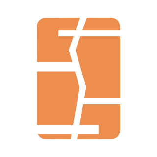
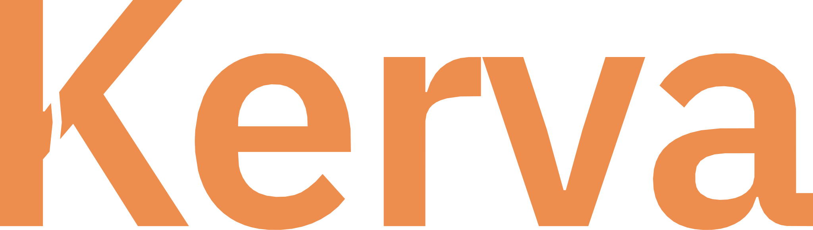

Enxergar o todo
Uma leitura mais direta dos movimentos financeiros, para entender o presente antes de planejar o próximo passo.


PROJETO 01 / EM DESENVOLVIMENTO
Um produto financeiro em construção para transformar números espalhados em uma visão mais clara do que entra, do que sai e do que vem depois.
A direção
Kerva nasce da vontade de deixar a vida financeira mais compreensível. A experiência é pensada para aproximar informação e decisão, com uma base que acompanha pessoas e negócios.
Uma leitura mais direta dos movimentos financeiros, para entender o presente antes de planejar o próximo passo.
Informação útil no momento certo, sem transformar a rotina em uma planilha impossível de manter.
Um produto que começa essencial e pode evoluir junto com a complexidade de cada vida financeira.
Onde estamos
O projeto está sendo construído em camadas: primeiro a base confiável, depois a experiência que torna essa base realmente útil.
Estrutura de dados, regras e contratos que sustentam o produto.
Fluxos mais simples para registrar, consultar e compreender.
Aperfeiçoamento contínuo a partir do uso real.